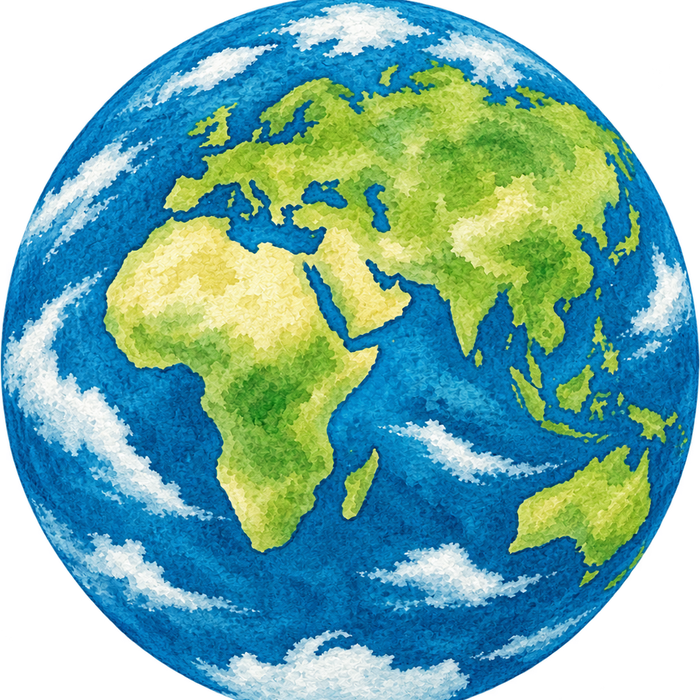
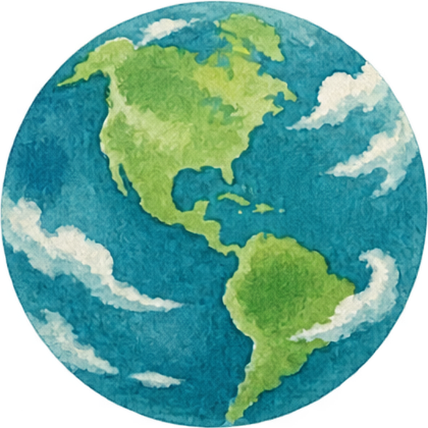

A global engineer, advancing personalized learning.
Grand Challenges Scholar researching intelligent tutoring systems.


Senior design · in progress
AKDOT seismic bridge assessment tool
Software engineer on a five-person NC State capstone team (CSC 492), building a full-stack risk-assessment tool for the Alaska Department of Transportation & Public Facilities, translating MATLAB seismic-assessment algorithms into Python.
Research
Global experience
About the program
The Grand Challenges Scholars Program is a National Academy of Engineering initiative that prepares engineering students to take on society's toughest problems through research, global and entrepreneurial experience, and service learning. My academic focus sits within GCSP's Joy of Living theme, under the challenge of Advancing Personalized Learning, building AI-driven systems that make education more individualized and accessible.
- GCSP Network (opens in a new tab)The national program network connecting Grand Challenges Scholars across universities.
- Joy of Living theme (opens in a new tab)National Academy of Engineering overview video.
- Advancing Personalized Learning (opens in a new tab)NAE report, pp. 45–47.
- NAE Grand Challenges Project (opens in a new tab)The initiative GCSP is built on.